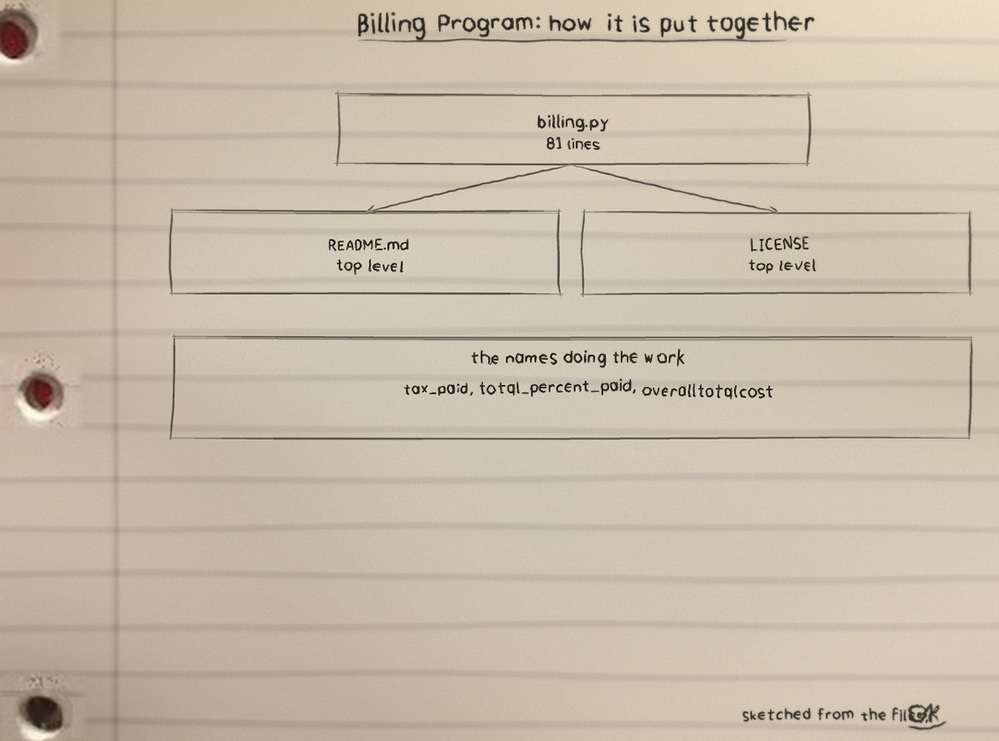
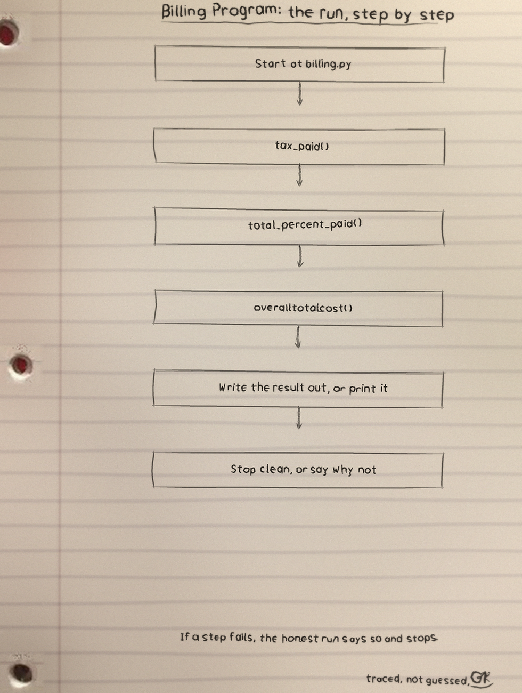
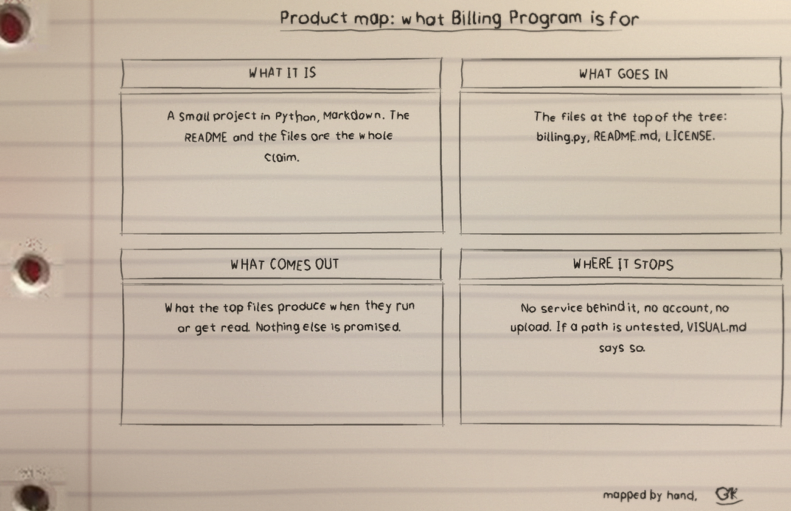

The arithmetic
tax_paid returns cost times 0.055, a fixed 5.5 percent tax; total_percent_paid returns cost times tip percent divided by 100; overalltotalcost adds cost, tax and tip.
Checked figures
Cost 100, tip 20: Tax Paid 5.50, Tip amount 20.00, Your overall cost is $125.50.
Cost 19.99, tip 15: tax 1.10, tip 3.00, total $24.09. Every figure kept to two decimal places.
Refusals
Letters instead of numbers, inf, nan, or closed input print Please enter a number and end with status 1 and no traceback. A negative cost or tip prints Please enter a number that is not negative, also status 1. Zero is accepted at both prompts.
The files and the count
Billing Program: 3 files and 82 counted lines, billing.py the largest piece. Names doing the work: tax_paid, total_percent_paid, overalltotalcost.
Margin note, pencilled on this card: the page once reported no test files, while the repository now carries test_billing.py covering the money functions and the rejected inf and nan runs. A tracking room does not leave a stale card in the wall.
Run it
python3 billing.py Tests by python3 -m unittest Licence GPL-3.0.
The repo README has the exact commands for this one: clone it, read the top file first, then run it.
The code, as it sits in the repo
From billing.py, line 13 on. I did not tidy it for the page.
def tax_paid(cost:float) -> float:
"""
Parameters
----------
cost : float
gets the cost passed into the function.
Returns
-------
float
Gets the total cost and multiplies the total cost by the tax rate .
"""
return cost * 0.055
# This function should input a total cost and a a tip percent then output the amount of tip to be paid.The sheets
The full set is the Billing-Program-Visuals folder in the repo.


